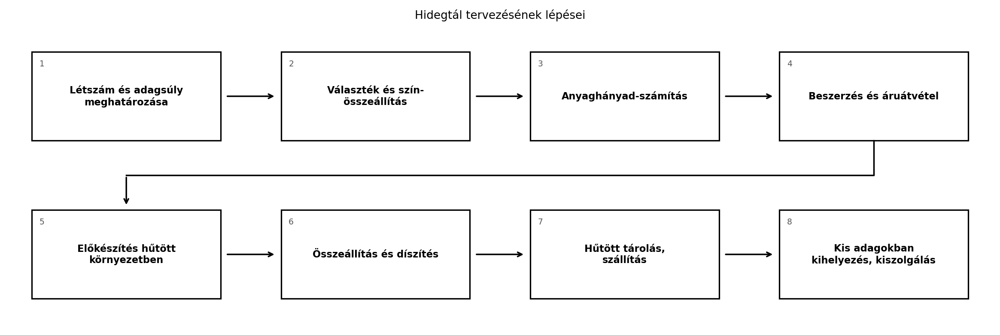

Hideg büfében, esküvőn, karácsonyi csomagküldésnél vagy egy egyszerű éttermi hidegtálon a szakácsnak nem elég egy ételt jól elkészíteni: úgy kell összeállítania a tálat, hogy az szép, biztonságos és a megrendelt adagszámnak pontosan megfeleljen. Aki hidegtálat vagy szendvicset készít, egyszerre dolgozik konyhatechnológusként, díszítőként és élelmiszer-biztonsági felelősként. Ha a tálon rossz a hűtés, ha a szendvics átázik, vagy ha a tányéron lévő díszítés allergént rejt, a vendég panasza vagy megbetegedése a konyha hibája lesz. Ezért ebben az alfejezetben a hideg vegyes ízelítőt, a dísztálat és a szendvicseket együtt tanuljuk meg tervezni, elkészíteni és tárolni.
Képzelj el egy 30 fős családi rendezvényt. A hidegkonyhai szakács reggel 9 órakor szeleteli a sült húsokat és a sajtot, majd 11 órakor egy hűtött, salátalevéllel bélelt dísztálat épít. A tál közepén franciasaláta-halom, körülötte legyezőszerűen vékony sonka-, pulykasonka- és csirkemell-szeletek, közöttük főtt tojásnegyedek, paradicsomgerezdek, lilahagyma-karikák és csemegeuborka. A tartármártás külön tálkában, jégágyon áll. A szendvicseket is frissen készítik, fóliával letakarva, hűtőtáskában szállítják. A tálalóban a kiszolgáló nem egyszerre teszi ki az összes ételt, hanem kis adagokban tölti fel a büféasztalt.
Definíció. Hideg vegyes ízelítő: olyan hideg étel vagy hidegtál, amely többféle, különböző ízű és színű hideg elemet tartalmaz együtt: szeletelt és egészben hagyott húsok, sajtok, tojás, zöldségek, saláták, hideg mártások és díszítőelemek. Az ízelítő lehet egytányéros előétel vagy nagy közös hidegtál.
Definíció. Dísztál: nagy, közös fogyasztásra szánt, látványosan elrendezett hidegtál. A dísztál nem csak étel: marketing- és ünnepi eszköz is, amelynek arányai, színei és elrendezése az étvágyat és a rendezvény hangulatát is befolyásolja.
Definíció. Szendvics: kenyérszeletekből, péksüteményből vagy más sós alapszeletből készített hideg étel, amelyre vagy amelyek közé ízesített vajat, vajkrémet, sajtot, húst, halat, tojást vagy zöldséget tesznek.
A szendvicsek csoportjai:
| Típus | Leírás | Jellemző példa |
|---|---|---|
| Nyitott szendvics | Egy szelet kenyéren látható feltét és díszítés | Sajtos, sonkás, lazacos vajas kenyér |
| Zárt szendvics | Két szelet kenyér között töltelék, összepréselve | Sonkás-vajas szendvics, tojáskrémes szendvics |
| Rakott szendvics | Több réteg kenyér és töltelék váltakozik | Hideg szendvicsréteg, szeletelve tálalva |
| Kanapé | Kis falatnyi nyitott szendvics vajkrémmel és díszítéssel | Pástétomos, kaviáros, sajtkrémes falat |
| Falatka | Pálcikás vagy kis adag hideg/meleg fogyasztható darab | Sajtos-szőlős pálcika, sonkatekercs |
A szendvicsfajták a rétegrendben és a méretben különböznek. Mindháromban ugyanazok a rétegek ismétlődnek: (1) kenyér vagy falatnyi alap, (2) vaj vagy vajkrém, (3) feltét vagy töltelék, (4) díszítés; a zárt szendvicsben a töltelék két vajréteg közé kerül.
Figyeld a vajréteget: a kenyér széléig ér, mert nedvességzáró réteg, a feltét leve így nem ázik a kenyérbe. A HTML-kiadásban a rétegekre mutatva megjelenik a nevük és a szerepük.
A hideg vegyes ízelítő összeállítása nem azt jelenti, hogy a hűtőben található összes maradékot egy tálra halmozzuk. Tervezni kell: a szemnek és a szájnak egyszerre kell dolgoznia. A tervezés lépései:
Az alábbi ábra a dísztál tervezésének folyamatát mutatja:

A diagram tehát a létszám és az adagsúly meghatározásától a kiszolgálásig vezet. A lényeg: a hidegtál biztonsága a hűtési láncban dől el, a látványa pedig a tudatos sorrendben és színrendezésben.
Továbbvitt eredmény. A dísztál-tervezés itt tanult szempontjait – adagsúly, arány, szín, fókuszpont, allergénelkülönítés, kis adagokban kihelyezés – fogjuk használni a Különleges és összetett levesek hidegen tálalt leveseinek büfén való kihelyezésénél (kis adagos, hűtött tálalás) és a Büfé- és rendezvényételek tervezése és készítése alfejezetben, ahol a teljes büfésort kell megtervezni.
Adagszám: 10 adag. Készétel adagsúlya: kb. 270 g. (Az anyaghányad tanulási példa; az üzemi receptúra és anyaghányad-gyűjtemény a mérvadó.)
Anyaghányad-táblázat:
| Nyersanyag | Mennyiség 10 adagra | Megjegyzés |
|---|---|---|
| Főtt, füstölt sertéssonka | 400 g | vékonyan szeletelve; allergén: a gyártói adatlap szerint (glutén, szója, tej, mustár, zeller lehet) |
| Hideg sült csirkemell | 350 g | szeletelve |
| Főtt, füstölt pulykasonka | 300 g | szeletelve |
| Gouda sajt | 300 g | szeletelve vagy kockázva; allergén: tej |
| Főtt tojás | 5 db (kb. 250 g) | negyedelve; allergén: tojás |
| Csemegeuborka | 100 g | lecsepegtetve, szeletelve; allergén lehet: kén-dioxid és szulfitok |
| Lilahagyma | 100 g | vékony karikára vágva |
| Paradicsom | 200 g | gerezdekre vágva |
| Jégsaláta | 100 g | levelekre szedve, mosva, szárítva |
| Franciasaláta (kész) | 300 g | allergén: tojás, mustár, zeller (a készítménytől függően) |
| Tartármártás | 300 g | allergén: tojás, mustár |
| Olívabogyó, petrezselyem | 50 g | ehető díszítés |
Allergének: glutént tartalmazó gabonafélék (ha a franciasalátában tészta vagy ropogós van), tojás, tej, mustár, zeller, kén-dioxid és szulfitok. A kész franciasaláta és tartármártás pontos összetételét mindig a gyártói adatlapról ellenőrizd.
Eszközök és gépek: szeletelőgép vagy éles szeletelő kés, vágódeszka (húshoz és zöldséghez külön), tálcák, előhűtött dísztál, kisebb tálkák, fólia, hűtő, maghőmérő (a hűtött termék ellenőrzéséhez).
Előkészítés: 1. A hűtött alapanyagokat csak közvetlenül a felhasználás előtt vedd ki a hűtőből. 2. A húsokat és a sajtot vékony, egyenletes szeletekre vágd; a szeleteket tálcán, letakarva, hűtőben tárold. 3. A tojást főzd keményre, hűtsd le, pucold meg, negyedeld. 4. A zöldségeket mosd, tisztítsd, cikkekre vagy karikára vágd; a salátát mosd, szárítsd. 5. A csemegeuborkát csepegtesd le, ne engedj levet a tálra.
Összeállítás: 6. Az előhűtött dísztálat béleld ki salátalevelekkel, hogy a zöldség ne nedvesítse a hússzeleteket. 7. A franciasalátát helyezd egy kisebb tálkába vagy halomba a tál közepére. 8. A hússzeleteket rendezd sorokban vagy legyezőben a saláta köré, úgy, hogy ne takarják egymást. 9. A sajtot, a tojásnegyedeket és a zöldségeket szín szerint váltakozva helyezd el. 10. A tartármártást külön tálkában tedd a tálra; a mártásos tálkát lehetőleg jégágyra helyezd. 11. Díszítsd olívabogyóval és petrezselyemmel, majd azonnal takard le, és tedd hűtőbe.
Az összeállítás 6–11. lépésének eredményét a felülnézeti tálkép mutatja; a jelmagyarázatban zárójelben áll, melyik lépésben kerül fel az elem.
A tálképen ellenőrizd a tervezési szabályokat: van fókuszpont (2), a legyezők nem takarják egymást (3–5), a színek váltakoznak, és a mártás (11) külön tálkában, jégágyon áll, nem a húsokon. Az „A” jelű elemekről a vendégnek pontos allergéntájékoztatást kell adni. A HTML-kiadásban a tál lépésenként felrakható, és egy kapcsolóval kiemelhetők az allergénes elemek.
Kritikus pontok: - Hűtési lánc: a kész hidegtálat a tálalásig jellemzően 5 °C alatt kell tartani (ellenőrizendő: az üzemi HACCP-terv és a NÉBIH-útmutató). - Keresztszennyeződés: a készre sütött húsok és a friss zöldségek ne érintkezzenek nyers hússal; a szeletelőgépet és a deszkákat használat után tisztítsd, fertőtlenítsd. - Időtartam: a szobahőmérsékleten töltött idő legyen a legrövidebb; nagyobb tálat ne hagyj 2 óránál tovább hűtés nélkül (ellenőrizendő: HACCP-terv).
Készentartás és tálalás: a hidegtálat hűtve vagy jégágyon tálald. A büféasztalt kis tételekben töltsd fel, a közben lecsöpögő levet távolítsd el.
Minőségi követelmények: a hús- és sajtszeletek vékonyak, nem száradtak; a zöldségek ropogósak; a színek élénkek; a tál nem tocsog lében; a mártás külön, hűtött tálkában van.
Tipikus hibák és javításuk: ha a saláta levet enged, a hússzeletek alá tegyél salátalevelet, és csepegtesd le a zöldségeket. Ha a sonkászeletek kiszáradtak, készíts kisebb adagokat, és letakarva hűtsd őket.
Változatok: halas ízelítő (füstölt lazac, tengeri hal, kapribogyó), vegetáriánus tál (grillzöldség, humusz, sajt, tojás nélkül vegán változat), light tál (pulykasonka, sovány sajt, kevés mártás, sok zöldség).
A szendvicskészítés alapja a jó kenyér és a jó vajkrém vagy töltelék. A kenyeret mindig frissen szeleteld, vagy előre szeletelt, csomagolt kenyeret használj. A vajat szobahőmérsékleten kend, hogy egyenletesen oszoljon el, de utána azonnal hűtsd vissza a szendvicset.
Nyitott szendvics: 1. A kenyérszeletet egyenletesen kend meg vajjal vagy vajkrémmel. 2. Helyezd rá a fő feltétet: sajtot, sonkát, párizsit, füstölt halat, tojást. 3. Díszítsd az ízéhez illő kiegészítővel: paradicsomgerezddel, uborkával, kapribogyóval, petrezselyemmel. 4. A szendvicset azonnal tedd hűtőbe, és tálalásig tartsd ott.
Zárt szendvics: 1. Két szelet kenyeret kend meg vajjal; a vajréteg védi a kenyeret attól, hogy a töltelék nedvessége beáztassa. 2. Az egyik szeletre tedd a tölteléket: sonkát, sajtot, felvágottat, krémet, zöldséget. 3. Fedd be a másik szelettel, enyhén nyomd össze. 4. Takard le fóliával, és hűtsd. Tálalás előtt vágd átlósan háromszögekre vagy téglalapokra.
Rakott szendvics: 1. Az alsó kenyérréteget kend meg ízesített vajjal vagy krémmel. 2. Tegyél rá feltétet, majd egy újabb kenyérréteget. 3. Ismételd a rétegezést, amíg el nem éred a kívánt magasságot; a tetejét kend be, vagy hagyd díszítésre. 4. Az összeállított rakott szendvicset csomagold fóliába, és hideg helyen tartsd legalább 30–60 percig, hogy a rétegek összetapadjanak. 5. Éles késsel, fűrészelő mozdulattal szeleteld.
Higiénia. A szendvicskészítésnél különösen fontos a kézhigiénia és az elkülönített munkafelület. A kenyeret és a készre sütött húst soha ne vágd azon a deszkán, amelyen előtte nyers hús vagy tojáshéj volt. Használj egyszer használatos kesztyűt, de az nem helyettesíti a kézmosást.
Allergén. A szendvicsek alapja a kenyér, ezért minden hagyományos szendvics glutént tartalmaz. A tej (vaj, sajt, krém), a tojás (tojáskrém, majonéz), a mustár (dresszing, tartár), a zeller (franciasaláta) és a hal (szardella, lazac) gyakori allergén. A gluténmentes vendégnek a szendvicset külön, gluténmentes kenyérből, tiszta deszkán és tiszta késsel készítsd; a morzsáktól védd a kész adagot.
Tárolás, szállítás, kiszolgálási idő. A kész szendvicseket és hidegtálat hűtőtáskában, jégakkuval szállítsd, 5 °C alatt (ellenőrizendő: HACCP-terv). A büféasztalon a hideg ételeket jégágyon vagy hűtött tálcán tartsd. A kiszolgálási időt rövidre kell fogni; a maradékot, amely szobahőmérsékleten állt, ne tedd vissza a hűtőbe, és ne szolgáld fel másnap, kivéve, ha az üzemi HACCP-terv erre külön utasítást ad és a hőmérsékleti adatok ezt igazolják.
Példa 1. Hidegtál bruttó szükséglete
Adott: 40 főre önálló büféfogásként hidegtálat készítünk, fejenként 250 g kész ételt számolunk. Az előkészítés során átlagosan 12% a veszteség (szeletelési maradék, zöldségtisztítás). Mennyi bruttó alapanyagot kell beszerezni?
Adott:
,
,
.
Keresett:
(bruttó tömeg).
Képlet:
Előbb a kész, nettó tömeg:
Behelyettesítés:
Eredmény: körülbelül 11,4 kg bruttó alapanyagot kell előkészíteni, hogy 40 adag kész hidegtálat kapjunk. Ellenőrzés: a 11,4 kg-ból 12% veszteséggel kg marad, tehát a számítás visszafelé is stimmel.
Példa 2. Zárt szendvics alapanyagai
Adott: 60 db zárt szendvicset készítünk. Minden szendvicshez 2 szelet kenyér kell. Egy 1 kg-os kenyérből átlagosan 22 szelet vágható (ellenőrizendő: átlagos szeletszám). Minden szelet kenyérre 5 g vajat, szendvicsenként pedig 60 g tölteléket számolunk. Mennyi kenyeret, vajat és tölteléket kell beszerezni?
Adott:
,
szelet/szendvics,
szelet/kg,
vaj/szelet,
töltelék/szendvics.
Keresett: kenyér tömeg
(),
vaj tömeg
(),
töltelék tömeg
().
Kenyér:
Kerekítve: 5,5 kg kenyér.
Vaj:
Töltelék:
Eredmény: 5,5 kg kenyér, 0,6 kg vaj, 3,6 kg töltelék kell. Ellenőrzés: a kenyér 5,5 kg-jából szelet, ami elegendő 60 szendvicshez.
Cél: tanuld meg a hideg vegyes ízelítő tálat a megadott adagszámmal, színesen és higiénikusan összeállítani.
Eszközök és anyagok: a fenti technológiai lap anyagai; szeletelő kés, külön vágódeszka húshoz és zöldséghez, előhűtött dísztál, kisebb tálkák, fólia, hűtő, maghőmérő, egyszer használatos kesztyű.
Biztonsági korlát. A szeletelőgépet és az éles hosszú kést csak oktatói felügyelettel használd; otthon csak a leírt biztonsági feltételekkel. A nyers hús előkészítésétől teljesen külön dolgozz.
Higiéniai előkészület: kézmosás, tiszta kötény, hajháló, az eszközök és felületek tisztítása, fertőtlenítése. A hűtő hőmérsékletét ellenőrizd.
Számozott lépések: 1. Olvasd el a technológiai lapot, és ellenőrizd, hogy minden alapanyag hűtött-e. 2. Készítsd elő a húsokat, sajtot, tojást, zöldségeket a technológiai lap szerint. 3. Az előhűtött tálat béleld ki salátalevelekkel. 4. Helyezd el a franciasalátát a fókuszpontba. 5. Rendezd a hússzeleteket legyezőszerűen, száradás nélkül, gyorsan. 6. Töltsd fel a széleket sajttal, tojással, zöldségekkel. 7. Tedd a tartármártást jégágyas tálkába. 8. Díszítsd, takard le, és mérd meg a tál hőmérsékletét.
Ellenőrzési pontok: a hidegtál hőmérséklete 5 °C alatt van (ellenőrizendő: HACCP-terv); a szeletek vékonyak; a tálon nincs felesleges folyadék; a mártás külön van; a díszítés ehető.
Dokumentálás: rögzítsd a hűtő hőmérsékletét, a készítés időpontját, a kiszolgálás kezdetét és a maradék kezelését, az üzemi HACCP-nyomtatvány szerint.
A hideg vegyes ízelítőnél és a dísztálnál az érzékszervi vizsgálat mellett a hőmérséklet a legfontosabb mérhető jellemző. A kész tál hőmérséklete a tálalásig 5 °C alatt legyen (ellenőrizendő: üzemi HACCP-terv). A hússzeletek széle nem száradt, a sajt nem izzad, a zöldségek nem fonnyadtak. A szendvicseknél a kenyér nem ázott el, a vaj egyenletesen eloszlik, a töltelék nem folyik ki, és a szeletek egyenlő méretűek.
Hiba: a hidegtálat órákkal a tálalás előtt szobahőmérsékleten díszítik. Ok: a tervezéskor nem veszik figyelembe a hűtési láncot. Helyes gyakorlat: a tálat a lehető legrövidebb idő alatt állítsd össze, és azonnal hűtsd; a büféasztalt kis adagokban töltsd fel.
Hiba: a zárt szendvics kenyerét nem vajazzák meg alul és felül, ezért a töltelék levet enged, és a kenyér átázik. Ok: a vajréteg nedvességzáró szerepének figyelmen kívül hagyása. Helyes gyakorlat: mindkét szeletet vékonyan, de egyenletesen vajazd, a nedves zöldségeket csepegtesd le.
Hiba: a dísztálon ugyanaz a vágódeszka szolgál a nyers hús előkészítésére és a kész sonka szeletelésére. Ok: nincs elkülönített munkafolyamat. Helyes gyakorlat: külön deszkát és kést használj a nyers és a késztermékhez, és a munkafelületet tisztítsd, fertőtlenítsd.
Hiba: a szendvicsre diós ropogóst vagy szezámmagot szórnak anélkül, hogy a vendéget tájékoztatnák. Ok: hiányos allergénkezelés. Helyes gyakorlat: minden allergént a tálalási kártyán vagy a kiszolgálónál jelezz; az allergiás vendég adagját a kért allergén nélkül, elkülönítve, tiszta eszközökkel készítsd, és pontosan tájékoztasd a keresztszennyeződés maradék kockázatáról.
Egy rendezvényen 60 főre készítettek hidegtálat. A szakács reggel 8 órakor összeállította a nagy dísztálakat, majd a szállító 10 órakor a büféasztalra tette őket. A jégágyak nem voltak előkészítve, ezért a tálak szobahőmérsékleten álltak. A vendégek 12 és 15 óra között fogyasztottak, a maradékot visszatették a hűtőbe, és másnap a személyzeti étkezőben megették. A rendezvényt követő napon többen hasi panaszokkal jelentkeztek. A hiba: a hideg ételek hosszú időn át a veszélyes hőmérsékleti zónában álltak, és a maradékot tovább használták. A tanulság: a hidegtálat hűtve kell tartani, kis adagokban kell feltölteni, és a maradékot a HACCP-terv szerint kell kezelni, nem automatikusan újrahasznosítani.
1. feladat (A) Sorold fel a szendvicsek öt csoportját, és adj mindegyikre egy példát!
2. feladat (A) Számítsd ki: 35 főre 180 g/adag hidegtálat készítünk. Hány kg kész hidegtálat kell előállítani?
3. feladat (B) Tedd helyes sorrendbe a dísztál összeállításának lépéseit: hűtés, beszerzés, létszám/adagsúly meghatározása, összeállítás, előkészítés, kiszolgálás, anyaghányad-számítás, választék kiválasztása. Rajzold le a folyamatot, és jelöld be a hűtési lánc kritikus pontját!
4. feladat (B) A technológiai lap 10 adagra szól. Számítsd át az anyaghányadot 25 adagra: mennyi főtt sonka és mennyi sajt kell, ha az alaprecept szerint 10 adaghoz 400 g sonkát és 300 g sajtot írunk?
5. feladat (C) Tervezz 50 fős hidegtálat: állítsd össze a fő elemek listáját, számold ki a készétel-mennyiséget (fejenként 230 g), és válassz úgy elemeket, hogy glutén-, tojás- és mustármentes vendég is tudjon biztonságosan választani. Jelöld, mely elemeket kell külön tálcára tenni!
6. feladat (D) Egy vendég azt kéri, hogy a szendvicsét gluténmentes kenyérből készítsék. A konyhán a szakács a hagyományos kenyeret és a gluténmentes kenyeret ugyanazon a deszkán szeleteli, majd a kész szendvicseket egymás mellé teszi. Elemezd a hibát: mi a veszély, mi a helyes eljárás, és milyen dokumentációval igazolnád a biztonságos kiszolgálást?
Önellenőrzés – válaszok:
1. feladat (A)
Nyitott szendvics – sajtos vajas kenyér. Zárt szendvics – sonkás-vajas
szendvics. Rakott szendvics – hideg szendvicsréteg. Kanapé – pástétomos
falat. Falatka – sajtos-szőlős pálcika.
2. feladat (A)
Adott:
,
.
Eredmény: 6,3 kg kész hidegtál kell.
3. feladat (B)
Helyes sorrend: 1. létszám/adagsúly meghatározása, 2. választék
kiválasztása, 3. anyaghányad-számítás, 4. beszerzés, 5. előkészítés, 6.
összeállítás, 7. hűtés, 8. kiszolgálás. A hűtési lánc kritikus pontja az
összeállítás és a kiszolgálás közötti teljes szakasz: a kész ételt 5 °C
alatt kell tartani, és a szobahőmérsékleten töltött időt minimálisra
kell csökkenteni.
4. feladat (B)
A szorzószám:
.
Sonka:
.
Sajt:
.
Tehát 25 adaghoz 1000 g sonkát és 750 g sajtot kell előkészíteni.
5. feladat (C)
A készétel-mennyiség:
.
Glutén-, tojás- és mustármentes választék: például pulykasonka (csak ha
a címke szerint nem tartalmaz glutént, tojást és mustárt; ellenőrizendő:
gyártói adatlap), natúr grillezett csirkemell, Gouda sajt
(tejallergén!), friss zöldségek, olívaolajos-citromos öntet. A
mártásokat, a franciasalátát és a tojást külön tálcára vagy tálkába
tedd, és jelezd a kártyán, hogy a főtálon keveredés van. A gluténmentes
kenyérből készült szendvicseket külön, fedett tálcán, megjelölve
kínáld.
6. feladat (D)
A hiba: a gluténmentes kenyeret ugyanazon a deszkán és ugyanazzal a
késsel szeletelik, mint a hagyományosat, így a gluténmorzsa
keresztszennyezheti a gluténmentes adagot. A cöliákiás vendégnél már kis
mennyiségű glutén is panaszt okozhat. Helyes eljárás: külön, tisztított
vagy egyszer használatos deszka és kés, tiszta munkafelület, friss
kesztyű; a kész gluténmentes szendvicset azonnal letakarva, elkülönítve
tároljuk. Dokumentáció: a HACCP-nyomtatványon rögzítsd, hogy az adagot
elkülönítve, gluténmentes alapanyagból készítetted, és a tálaláskor a
kiszolgáló is jelzi ezt a vendégnek.
A hideg vegyes ízelítő többféle hideg elemből, tudatosan összeállított dísztál. A dísztál tervezésekor először a létszámot és az adagsúlyt határozd meg, majd állítsd össze a szín-, íz- és állagválasztékot, számítsd az anyagszükségletet, és a hűtési láncot tartsd folyamatosan. A tálon a fehérjés elemek 50–60%-ban, a zöldségek 20–30%-ban, a mártások 10–15%-ban jelenjenek meg; a díszítés ehető és allergénjelölt legyen. A szendvicsek lehetnek nyitott, zárt, rakott típusúak, valamint kanapék és falatkák. A vajréteg a kenyér beázását gátolja. A kész hideg ételeket 5 °C alatt tárold, szállítsd és tálald (ellenőrizendő: HACCP-terv), a büféasztalt kis adagokban töltsd fel. Továbbvitt eredmény. A hidegtál-tervezés szabályait – adagsúly, arány, szín, fókuszpont, allergénelkülönítés, kis adagokban kihelyezés – használjuk a Különleges és összetett levesek és a Büfé- és rendezvényételek tervezése és készítése alfejezetekben.
A fejezet támaszkodik a NÉBIH hidegkonyhai útmutatóinak elveire, a 852/2004/EK rendelet HACCP-követelményeire és az 1169/2011/EU rendelet allergénjelölési szabályaira. Ellenőrizendő: az üzemi HACCP-terv hőmérsékleti határai, a büféasztali kiszolgálási idő, a NÉBIH-útmutató konkrét szobahőmérsékleti időtartamai, az átlagos kenyérszelet-szám, a franciasaláta- és tartármártás-allergén lista a gyártói adatlapok szerint, valamint a technológiai lap anyaghányadainak üzemi normákhoz igazítása.